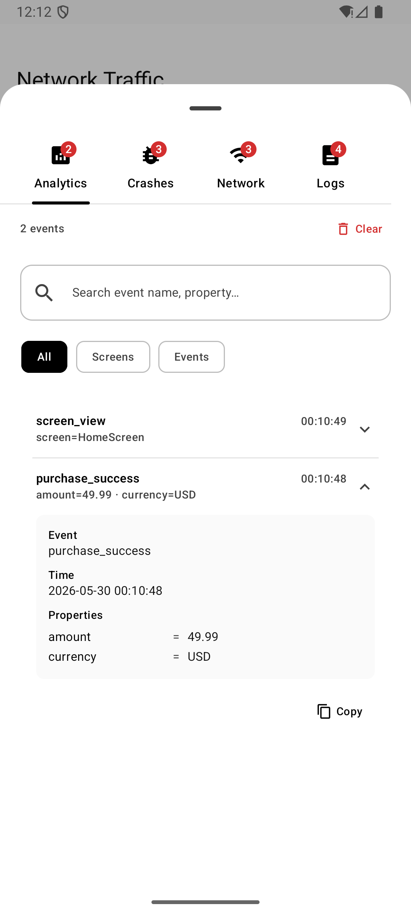
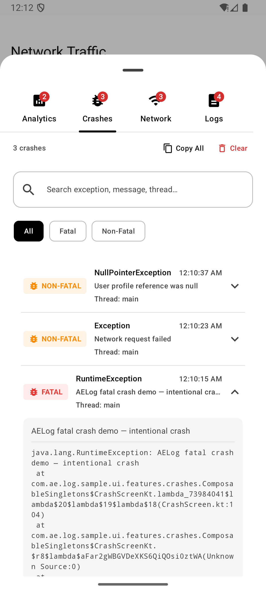
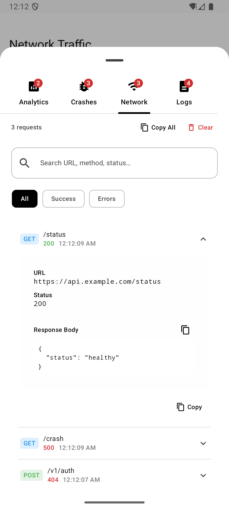
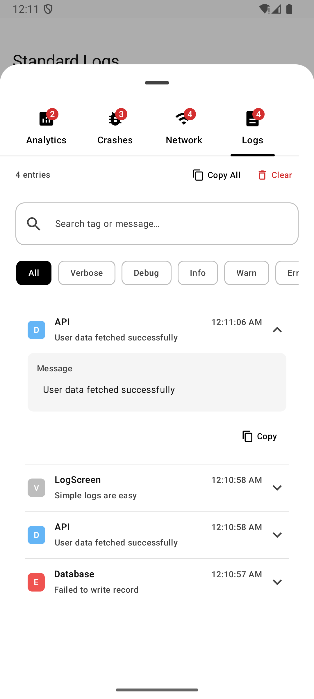

v1.1.5 is now live for KMP & Android
See more.
Fix faster.
The enterprise-grade logging and crash tracking library built for Kotlin Multiplatform Android Apps iOS Projects Network Tracing Crash Capture to help mobile teams debug and ship with confidence.
Natively supports
iOS



